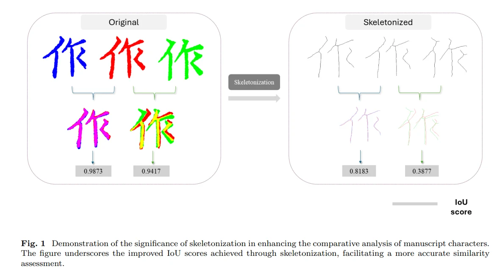
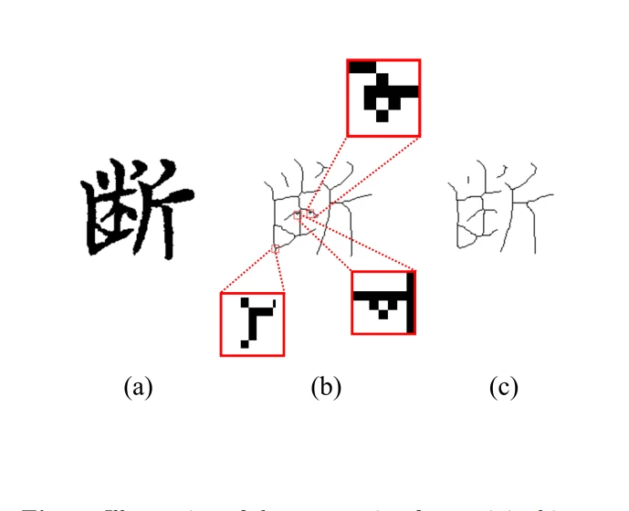
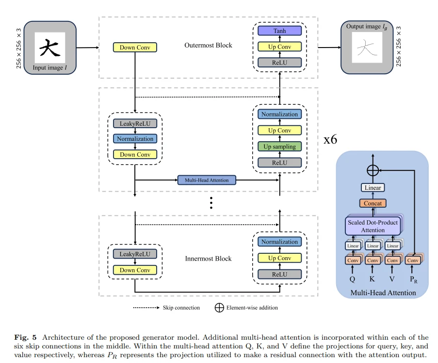

KOREATECH, master's thesis, 2023 to 2025
PrecisionGAN
Thick historical print in, clean one-pixel skeleton out.
- Role
- First author
- Where
- KOREATECH
- Published
- IJDAR, Springer, 2024
- Stack
- PyTorch
Why skeletons
To tell whether two printed characters came from the same piece of type, you compare their shapes. Ink spread gets in the way. Skeletons remove it.

The problem with the classical way
Thinning algorithms break strokes and grow spurs. PrecisionGAN learns the mapping instead and keeps the strokes whole.

The model
